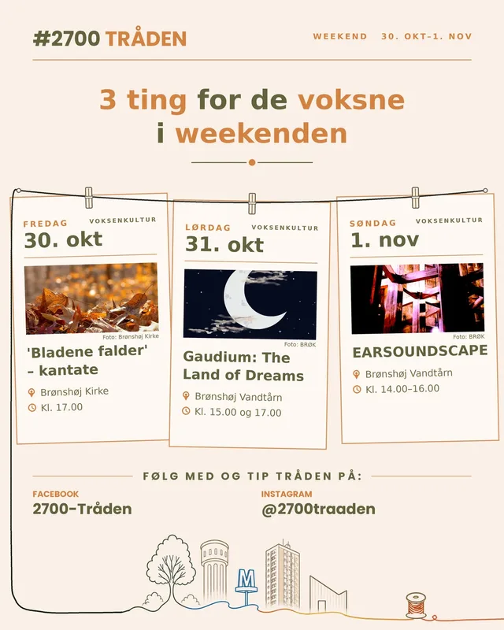

Hvad sker der i 2700 i denne weekend?
Fredag 30. oktober
Maveleje-lege og babymassage (0–8 mdr.)
Tingbjerg Bibliotek & Kulturhus · Kl. 10.30–11.30 · 25 kr.
En workshop med øvelser og idéer til maveleje-lege, så det bliver sjovere for babyen at ligge på maven. Bagefter prøver I forskellige slags babymassage. Underviser er fysioterapeut Marianne Mogensen. Gravide er også velkomne.
Læs mere
Halloween i 2700
BRØK og Rytterskolen · Kl. 16.00–19.00 · Gratis
Gys og rollespil for alle fra 5 til 99 år. Der er ansigtsmaling kl. 16–17, en gyserrute i Rytterskolen for børn fra 10 år kl. 16.30–19 og en kamparena bag BRØK kl. 17–19, hvor man skal samarbejde om at klare en minotaur. Kom gerne udklædt – både børn og voksne.
Læs mere
'Bladene falder' – ny allehelgens-kantate
Brønshøj Kirke · Kl. 17.00
Organist Mads Damlund har skrevet en ny kantate til Brønshøj Kirkes Pigekor og voksenkor. Den handler om døden, sorgen og savnet, og teksterne bygger bl.a. på inskriptioner fra gravsten på Brønshøj Kirkegård og Rilkes digt 'Efterår'.
Læs mere
Husum Boldklub – Watan SC
Husumparken · Kl. 18.30
Fredagsfodbold i Husum: Husum Boldklub tager imod Watan SC i Serie 1.
Læs mere
Taktløs Strygertour: PARSUM, Aquire og Hvælving
Brønshøj Vandtårn · Kl. 20.00–22.00 · 100 kr.
Unge artister fra Musikkollektivet Taktløs spiller deres sange med en klassisk strygekvartet i stedet for band – indie, pop og rock med celloer, bratsch og violin i vandtårnets vilde akustik. Tårnet er uopvarmet, så tag varmt tøj på.
Læs mere
IF Stadion – HIK
EnergiCenter Voldparken, Åkandevej 31 · Kl. 20.30
Håndbold i Husum: IF Stadions herrer tager imod HIK i 2. division. Ingen af holdene har point endnu, så der er noget at spille for.
Læs mere
Lørdag 31. oktober
Hoppeloppen – selvbetjent legestue (1–5 år)
BRØK (Bevægelsen) · Kl. 09.00–17.00 lørdag og søndag · Gratis
En lille indendørs legestue, hvor børnene bygger deres egen balancebane. Den er selvbetjent og kun for 1–5-årige. Ingen tilmelding.
Læs mere
Musikalsk legestue (1–4 år)
Husum Kirke · Kl. 10.00–12.00 · Gratis, tilmelding
Syng, spil og dans med dit barn eller barnebarn i kirkerummet. Bagefter er der legestue med kaffe, boller og saftevand.
Læs mere
Kranier før Halloween
Edderkoppelegepladsen ved Pilesvinget 80, Utterslev Mose · Kl. 10.00–12.00 · Gratis
En biolog tager sin samling af kranier fra mosens og skovens dyr med. Hvad spiser et dyr, og hvilket kranie hører til hvilket dyr? Mest for børnehave- og indskolingsbørn med deres voksne. Bare mød op – og der bliver ikke noget uhyggeligt.
Læs mere
Halloween-bio (3–9 år)
Brønshøj Bibliotek · Kl. 10.30–11.30 · Gratis, tilmelding
Små film om Rita og Krokodille, Vitello og andre kendte figurer fra børnebøgerne, der fejrer halloween. Filmene kører i loop, så I kan komme og gå.
Læs mere
Brønshøj – Næsby
Tingbjerg Idrætspark · Kl. 14.00
Brønshøj Boldklub tager imod Næsby BK i 3. division.
Læs mere
Gaudium: The Land of Dreams
Brønshøj Vandtårn · Kl. 15.00 og 17.00 · 130 kr., studerende 100 kr.
Vokalensemblet Gaudium, et kor af unge sangere, synger allehelgenskoncert om drømme, erindring og fantasi. Hovedværket er nye sange af Jesper Koch til digte af William Blake, skrevet til vandtårnets enorme efterklang.
Læs mere
Søndag 1. november
EARSOUNDSCAPE
Brønshøj Vandtårn · Kl. 14.00–16.00 · Gratis, tilmelding
Rumlig elektronisk lydkunst: Jakob Riis og Jørgen Teller spiller live elektronik over fire højttalere i tårnet, og lydværket Satellite Synthesizer bliver spillet.
Læs mere
Har vi overset noget, der sker i 2700? Smid det i kommentarerne — så hjælper I med at gøre Fælleskalenderen bedre.